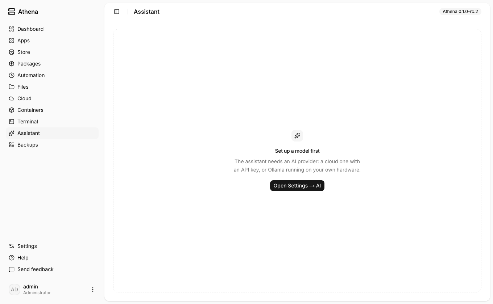

AI assistant
An assistant that can use Athena for you: "install Jellyfin", "what is using the disk?", "upgrade my packages". It is built on Pydantic AI.

Set up a model
The assistant needs a model provider. Open Settings → AI and add one:
- Ollama or llama.cpp running on the server: the model runs on your own hardware and nothing leaves the machine.
- A cloud provider with your own API key. Keys are stored encrypted.

Under Tools you choose what the assistant may do besides managing apps, packages and files: remembering notes across chats, looking things up on the web, running shell commands (off by default) and more.
Chat
Open Assistant (or the shortcut in the header) and write what you want. It answers, shows what it ran, and asks for your approval before it changes anything: installing an app, editing a file, running a command. Read the approval card before you accept.
The assistant only offers actions your host supports. Everything it does is recorded in the audit log.
Two parts aren't ready yet: the assistant's browser tool is off because of an upstream conflict, and durable execution of turns is experimental.